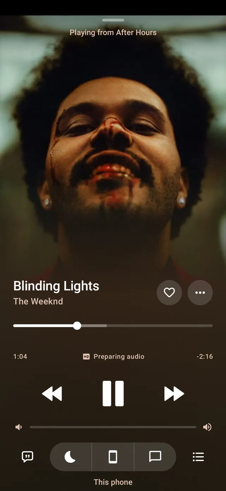
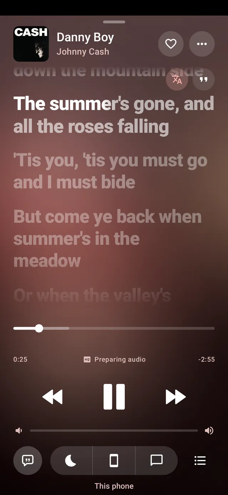
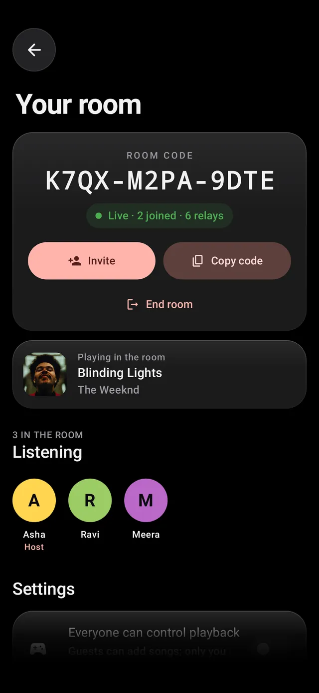
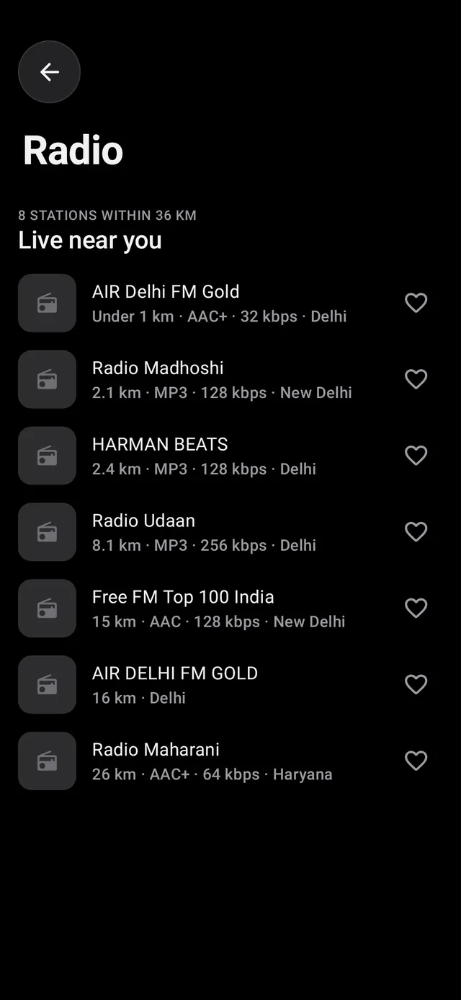
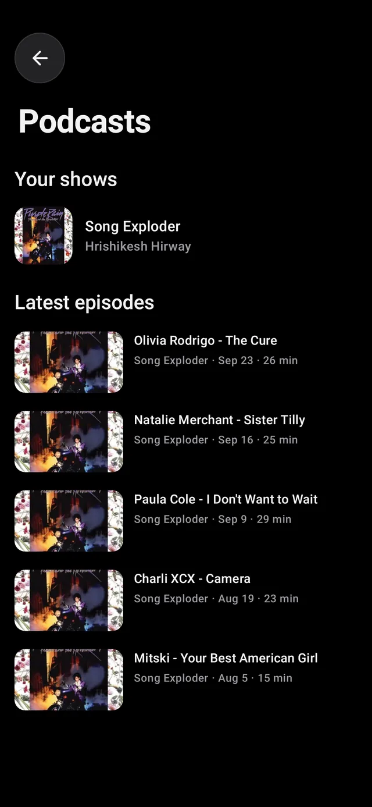
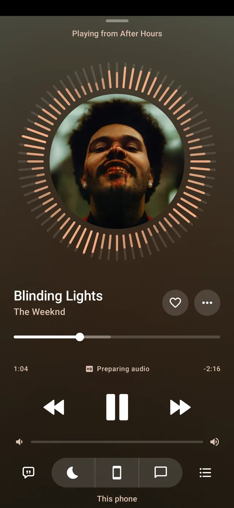

Every song.
No ads.
No account.
OpenTune plays the YouTube Music catalogue with synced lyrics, offline downloads, live radio and podcasts, and never shows you an ad.

- Android phones and tablets
- Android TV and Google TV
- Windows, macOS and Linux
- Web player in Chrome and Firefox
- iPhone, early build
Made for the way you listen.
The player takes its colour from each cover, and everything else stays out of the way.
-

-

-

-

-

Swipe for more screens.
Sound, taken seriously.
Good defaults for everyone, and the controls a careful listener goes looking for.
- The best stream first
- Streams are ranked by how they sound, not raw bitrate, and a few seconds in OpenTune switches to a clearly better copy without a gap.
- Lossless, from add-ons you choose
- Add a compatible audio service and Max quality checks it for a lossless copy of the song. How add-ons work.
- 15-band equalizer and AutoEq
- Drag the bands or pick a preset, and correct your headphones from more than 8,000 AutoEq measurements before your own EQ.
- Bit-perfect to a USB DAC
- On Android 14 and newer, a DAC gets each song at its own sample rate, with no mixing or resampling on the way.
- One steady volume
- Loudness levelling uses YouTube's own measurement of each song, so a quiet track and a loud one sit at the same level.
- Crossfade and Automix
- Songs blend into each other, shaped by how one ends and the next begins, or play back to back if you prefer.
- Offline downloads for songs, albums and playlists
- Android Auto and home-screen widgets
- Cast to Chromecast and DLNA speakers
- Smart playlists that update themselves
- Spotify import for your playlists
- Last.fm and ListenBrainz scrobbling
- Discord status while you listen
- Sleep timer that fades the music out
- What's this song? from the microphone
- Daily mixes made on your phone
- Replay, your listening year in stories
- Your own files and Subsonic servers
Get OpenTune for Android.
The latest release, straight from GitHub.
- Download the APKThe button above gets the universal build, which runs on every phone with Android 8.0 or newer.
- Allow the installOpen the file. If Android asks, let your browser or file manager install apps, just this once.
- Press playNo sign-in needed. OpenTune checks for new versions once a day and can update itself from Settings.
Every release lists the SHA-256 checksums of its APKs. You can also follow the repository with Obtainium.
-
Android TV and Google TV
The same APK opens a TV layout driven by the remote. Sign in by scanning a code with your phone.
Get the APK for your TV -
Windows, macOS and Linux
A desktop app with a sidebar, synced lyrics beside the page and the queue always in view.
Not yet signed by Apple or Microsoft, so the first launch shows a warning. On a Mac, right-click the app and choose Open.
-
In your browser
Nothing to install except a small extension in Chrome, Edge, Brave or Firefox, which plays the music and connects your accounts.
Open the web player -
iPhone and iPad · early
Apple doesn't allow OpenTune on the App Store, so it installs through SideStore or AltStore, signed with your own Apple ID. iOS 16 or newer.
Source:
https://justshivv.github.io/Opentune/ios/source.json
What's new.
Every build, straight from GitHub Releases.
Built in the open.
Every line of OpenTune is on GitHub under GPL-3.0. Read it, build it yourself, report a problem or suggest what comes next.
contributions in the last year
Questions, answered.
Is OpenTune free and ad-free?
Yes. OpenTune is free, open-source software under GPL-3.0, with no ads and no subscription. The source is on GitHub.
Do I need an account?
No. Search and play straight away. You can sign in to YouTube Music if you want your likes and playlists, and connect Spotify, Last.fm or ListenBrainz if you use them.
Can I listen offline?
Yes. Download songs, albums or whole playlists from their menus, and play the music files already on your phone.
Which Android phones are supported?
Android 8.0 or newer. The download button gets the universal APK, which runs on any processor; arm64 builds for newer phones are on GitHub.
Is it on the Play Store?
No. Official builds come only from OpenTune's GitHub Releases, each with checksums. Apps such as Obtainium can follow that page and keep it updated.
Can I use it on a computer or a TV?
Yes. There's a desktop app for Windows, macOS and Linux, a web player for Chrome, Edge, Brave and Firefox, and the Android app switches to a TV layout on Android TV and Google TV.
What does OpenTune collect?
Usage counting sends a random installation ID, the app version and daily play totals, never song titles or your name. You can turn it off in Settings › About. The privacy page has the details.